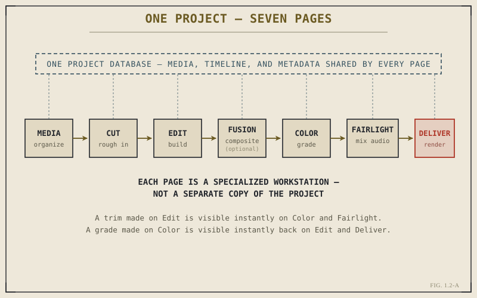

Open Resolve for the first time and the first thing that's likely to confuse you isn't a tool or a menu — it's the row of names running along the bottom of the window: Media, Cut, Edit, Fusion, Color, Fairlight, Deliver. Most software organizes itself around panels you show and hide. Resolve organizes itself around pages you switch between entirely. That's not a cosmetic choice, and understanding why it's built this way will save you real confusion later, when you're wondering why a tool you know exists on one page seems to have vanished on another.
Here's the short version, which the rest of this chapter unpacks: each page is a specialized workstation built around one job — organizing media, cutting fast, building a finished sequence, compositing, grading, mixing audio, or rendering output. All seven sit on top of the same project, the same timeline, and the same media, at the same time. Switching pages doesn't open a different file or a different copy of your work. It changes which set of tools you're looking at that project through.

Seven specialized pages, one shared project database underneath all of them.
Why Not Just Build One Screen With Everything On It?
It's a fair question. Plenty of software crams every tool into a single window with dockable panels, and lets you arrange things however you like. Resolve could theoretically do the same — a single mega-window with a timeline, a node graph, a mixer, and a render queue all visible at once. In practice, that would be close to unusable, for a reason that has nothing to do with screen space and everything to do with what each job actually needs from you.
Editing a scene together and grading a shot's color are not variations on the same task. They require different views of the footage, different precision, and different mental modes. Editing is about pacing, structure, and story — you're thinking in shots and seconds, often working across a whole sequence at once. Grading is about a single frame at a time, judged against reference scopes, adjusted with fine, deliberate control. Cramming both into one interface means one of them is always fighting for space it doesn't need, and hiding tools the other one does.
Resolve's answer isn't to compromise every task into one shared layout. It's to give each task its own full-screen environment, purpose-built for exactly what that task requires — while keeping all of them pointed at the same underlying project.
Walking the Seven Pages in Order
The pages are arranged left to right roughly in the order a project moves through them, though real projects loop back and forth constantly rather than proceeding in a straight line. It's still worth knowing the intended flow, because it explains what each page assumes you're trying to do when you land on it.
Media is where footage enters the project. You import camera files, organize them into bins, attach metadata, and generate proxies here — the administrative work of turning a folder of raw camera files into an organized, editable library. Nothing about storytelling happens on this page. It's entirely about making sure the right footage is easy to find later.
Cut is the fastest page in the software, purpose-built for getting a rough sequence assembled quickly — particularly useful for editors working with a large volume of footage under time pressure, like same-day turnaround or high-volume unscripted content. Part III covers it in full; for now, think of it as a stripped-down, speed-optimized front door into editing.
Edit is the page most of this book's Parts IV through VII are about, and the one most editors spend the majority of their time on. It's the full timeline environment — multiple tracks, precise trimming, transitions, titles, keyframing. Where Cut trades depth for speed, Edit gives you the full toolset for building a finished sequence.
Fusion is Resolve's compositing environment, and it's the first page most editors treat as optional — not because it's less capable, but because not every project needs true compositing. When a title, a visual effect, or a piece of motion graphics needs more control than the Edit page's built-in tools offer, Fusion is where you go. Part X covers it; Chapter 7.4 shows how Fusion effects surface directly on the Edit page for lighter work, without a full page switch.
Color is the grading environment — scopes, a node graph, qualifiers, tracking, all built around getting a shot's look exactly right, one clip and one adjustment at a time. Part IX is dedicated to it, and Chapter 1.3 introduces the node-graph idea that both Color and Fusion share.
Fairlight is a complete digital audio workstation, not an audio "panel." It has its own mixer, its own bus routing, its own metering built to broadcast loudness standards. Part VIII covers why this matters and how to work in it — the short version is that Resolve doesn't treat audio as an afterthought bolted onto a video editor, and Fairlight's existence as a full page is the proof.
Deliver is the last stop: rendering the finished project out to actual files, in whatever codecs and formats the destination requires. Part XI covers it. Nothing about your project changes on this page — it only reads the finished timeline and writes it out.
One Project, Viewed Seven Ways
The detail that matters most, and the one that connects directly back to Chapter 1.1, is this: none of these pages hold a separate copy of your work. There's one project database underneath all seven — one Media Pool, one set of timelines, one set of clip metadata — and each page is simply a different lens onto that same data, built with the tools that lens's job requires.
This is why a trim you make on the Edit page shows up instantly when you switch to Color — you're not "syncing" two programs, because there was never a second copy to sync. It's why a grade built on Color appears immediately back on Edit's viewer, and in whatever gets rendered on Deliver. It's the same non-destructive, pointer-based idea from Chapter 1.1, just extended across every stage of finishing a project instead of only the timeline.
Practically, this means you should think of switching pages the way you'd think of walking from a rough-cut editing bay into a color grading suite down the hall — a change of tools and mindset, not a change of project. You'll move between pages constantly on a real job: trimming on Edit, popping into Color to check a shot, back to Edit to adjust the cut, over to Fairlight to fix a level, back to Deliver to check a render. That fluid movement between specialized environments, all pointed at one living project, is the actual design philosophy behind Resolve — and it's worth having in mind every time you click one of those seven names at the bottom of the screen.
Key Concepts to Remember
- Each of Resolve's seven pages — Media, Cut, Edit, Fusion, Color, Fairlight, Deliver — is a purpose-built workstation for one job, not a panel layout you customize.
- All seven pages share one project database — switching pages changes your tools, not which project or timeline you're working on.
- Changes made on one page appear instantly on the others, because there was never a separate copy to keep in sync in the first place.
- Real projects move back and forth between pages constantly — treat page-switching as normal workflow, not a sign you're doing something wrong.
Cross-References Forward
| → Ch. 1.3 | Introduces the node graph — the structure shared by the Color and Fusion pages you just met here. |
| → Ch. 1.5 | Shows the interface conventions — toolbar, inspector, viewer — that repeat consistently across all seven pages. |
| → Pt. III | The Cut Page — the first page covered in full, and the fastest way into a real assembly. (Not yet published.) |